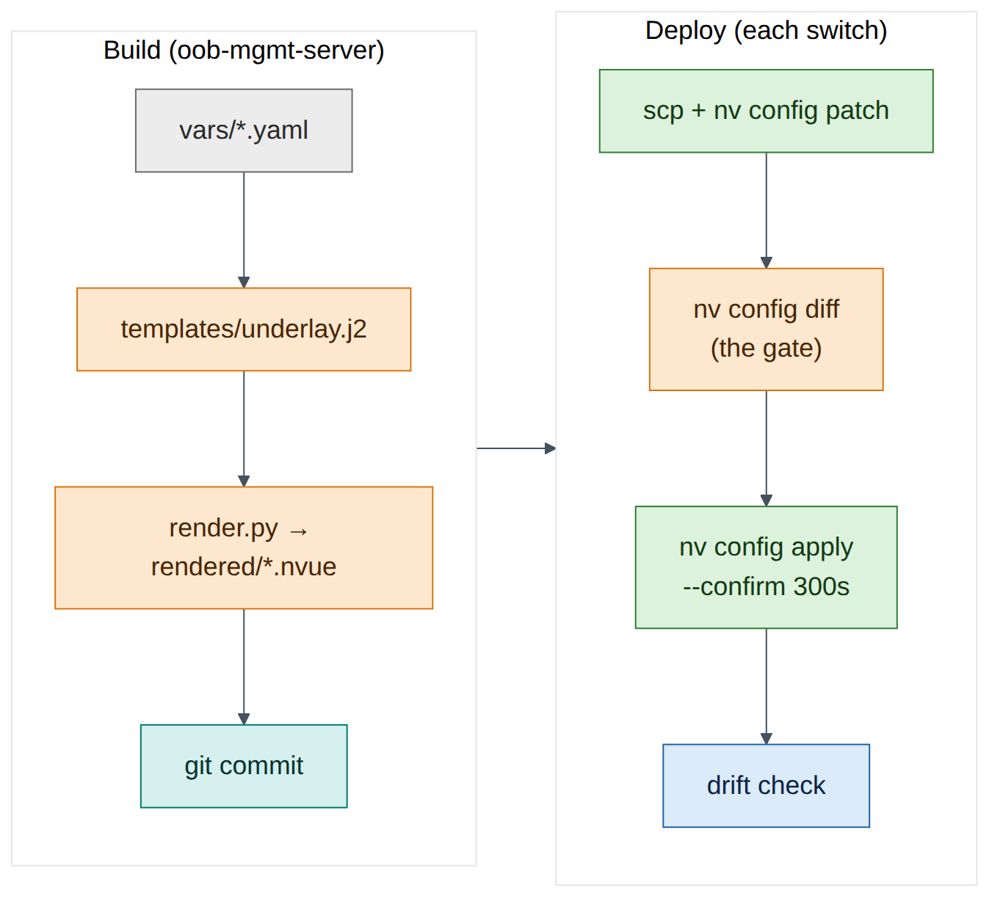
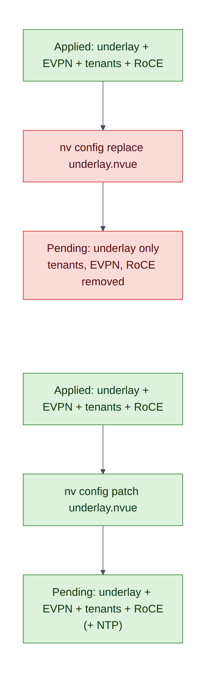

Lab 11 — NVUE Templates and Configuration Management¶
Companion to the NCP-AIN Certification Guide
This free lab is part of the hands-on companion to NCP-AIN Certification Guide by Vakeesan Thevarajah (Cloudfoxy Ltd). The book explains the theory, design choices and hardware behaviour behind every step.
Lab at a glance¶
| Book chapters | 21 (NVUE templates and configuration management), 4 (NVUE revisions) |
| Exam objectives | 6.1 Configure Spectrum-X using NVUE templates |
| Time | 60 minutes |
| Air resources | oob-mgmt-server and the six switches |
| Prerequisites | Labs 1, 2 and 5 |
Objectives¶
- Keep per-switch variables in YAML and one Jinja2 template in git on the oob-mgmt-server.
- Render NVUE command files for all six switches and use them as the golden configuration for the underlay.
- Load them with
nv config patch, gate withnv config diff, and apply with--confirm. - See exactly why
nv config replacewith a partial file is dangerous, and recover safely. - Push a change through the NVUE REST API (revision → PATCH → apply) from the oob-mgmt-server.
- Detect drift between a switch and its golden file.
Background¶
In Labs 1, 2 and 5 you typed configuration switch by switch. That's how drift starts (Chapter 21): six switches, six chances to miss a line. The fix is to describe each switch with a handful of variables, render its configuration from one template, keep both in git, and load the result with NVUE's file commands or REST API.
NVUE's file commands accept either YAML or a plain text file of nv set / nv unset lines. This lab renders the text form: it's easy to read and review, and it uses exactly the commands you already typed in Labs 1 and 2. Chapter 21 shows the YAML form, which you'd use for complete configurations.

Step-by-step¶
Task 1 — Set up the project on the oob-mgmt-server¶
ubuntu@oob-mgmt-server:~$ sudo apt-get update && sudo apt-get install -y python3-jinja2 python3-yaml git
ubuntu@oob-mgmt-server:~$ mkdir -p ~/helix-nvue/{vars,templates,rendered} && cd ~/helix-nvue
ubuntu@oob-mgmt-server:~/helix-nvue$ git init -q && git config user.name "Helix NetOps" && git config user.email netops@example.com
Task 2 — Variables¶
One file per switch. The values are the lab plan from Lab 0 and Lab 2.
ubuntu@oob-mgmt-server:~/helix-nvue$ cat > vars/hxb-leaf-r1.yaml <<'EOF'
hostname: hxb-leaf-r1
role: leaf
asn: 65101
loopback: 10.255.0.11
uplinks:
swp31: to-hxb-spine01-swp1
swp32: to-hxb-spine02-swp1
EOF
Create the other five with a small loop rather than by hand, which is the point of the exercise:
ubuntu@oob-mgmt-server:~/helix-nvue$ for n in 2 3 4; do
> cat > vars/hxb-leaf-r$n.yaml <<EOF
> hostname: hxb-leaf-r$n
> role: leaf
> asn: 6510$n
> loopback: 10.255.0.1$n
> uplinks:
> swp31: to-hxb-spine01-swp$n
> swp32: to-hxb-spine02-swp$n
> EOF
> done
ubuntu@oob-mgmt-server:~/helix-nvue$ for s in 1 2; do
> cat > vars/hxb-spine0$s.yaml <<EOF
> hostname: hxb-spine0$s
> role: spine
> asn: 65100
> loopback: 10.255.0.$s
> uplinks:
> swp1: to-hxb-leaf-r1-swp3$s
> swp2: to-hxb-leaf-r2-swp3$s
> swp3: to-hxb-leaf-r3-swp3$s
> swp4: to-hxb-leaf-r4-swp3$s
> EOF
> done
ubuntu@oob-mgmt-server:~/helix-nvue$ ls vars
hxb-leaf-r1.yaml hxb-leaf-r2.yaml hxb-leaf-r3.yaml hxb-leaf-r4.yaml hxb-spine01.yaml hxb-spine02.yaml
Check your understanding
In the spine loop, why does the description end in swp3$s? (Answer: spine01 connects to each leaf's swp31 and spine02 to swp32, so the suffix is 31 or 32.)
Task 3 — The template and the renderer¶
-
One template for every switch. It produces the same
nv setlines as Labs 1 and 2, plus two NTP servers that are new:ubuntu@oob-mgmt-server:~/helix-nvue$ cat > templates/underlay.j2 <<'EOF' # {{ hostname }} - rendered from templates/underlay.j2 - do not edit by hand nv set system hostname {{ hostname }} nv set interface lo ip address {{ loopback }}/32 {% for port, desc in uplinks.items() %} nv set interface {{ port }} description {{ desc }} nv set interface {{ port }} link mtu 9216 nv set interface {{ port }} link state up nv set vrf default router bgp neighbor {{ port }} remote-as external {% endfor %} nv set router bgp autonomous-system {{ asn }} nv set router bgp router-id {{ loopback }} nv set vrf default router bgp address-family ipv4-unicast network {{ loopback }}/32 nv set service ntp mgmt server 0.pool.ntp.org nv set service ntp mgmt server 1.pool.ntp.org EOF -
The renderer fails loudly on a missing variable (
StrictUndefined), so a typo in a vars file can't produce a half-empty configuration:ubuntu@oob-mgmt-server:~/helix-nvue$ cat > render.py <<'EOF' #!/usr/bin/env python3 import pathlib, yaml, jinja2 env = jinja2.Environment(loader=jinja2.FileSystemLoader("templates"), undefined=jinja2.StrictUndefined, trim_blocks=True, lstrip_blocks=True) for f in sorted(pathlib.Path("vars").glob("*.yaml")): data = yaml.safe_load(f.read_text()) out = pathlib.Path("rendered") / f"{data['hostname']}.nvue" out.write_text(env.get_template("underlay.j2").render(**data)) print("rendered", out) EOF ubuntu@oob-mgmt-server:~/helix-nvue$ python3 render.py rendered rendered/hxb-leaf-r1.nvue ... rendered rendered/hxb-spine02.nvue ubuntu@oob-mgmt-server:~/helix-nvue$ cat rendered/hxb-leaf-r1.nvueExpected output:
# hxb-leaf-r1 - rendered from templates/underlay.j2 - do not edit by hand nv set system hostname hxb-leaf-r1 nv set interface lo ip address 10.255.0.11/32 nv set interface swp31 description to-hxb-spine01-swp1 nv set interface swp31 link mtu 9216 nv set interface swp31 link state up nv set vrf default router bgp neighbor swp31 remote-as external nv set interface swp32 description to-hxb-spine02-swp1 nv set interface swp32 link mtu 9216 nv set interface swp32 link state up nv set vrf default router bgp neighbor swp32 remote-as external nv set router bgp autonomous-system 65101 nv set router bgp router-id 10.255.0.11 nv set vrf default router bgp address-family ipv4-unicast network 10.255.0.11/32 nv set service ntp mgmt server 0.pool.ntp.org nv set service ntp mgmt server 1.pool.ntp.org -
Commit it. The rendered files are the golden configuration.
ubuntu@oob-mgmt-server:~/helix-nvue$ git add -A && git commit -qm "Underlay golden config for helix-b-air" && git log --onelineVersion note
If your Cumulus release rejects the NTP lines, check the syntax with
nv set service ntp <Tab>and correct the template, not the switch. That's the discipline this lab teaches.
Task 4 — Patch, diff, apply with confirm¶
-
Copy the file to hxb-leaf-r1 and load it with patch (merge into the pending revision):
ubuntu@oob-mgmt-server:~/helix-nvue$ scp rendered/hxb-leaf-r1.nvue cumulus@hxb-leaf-r1:/tmp/ ubuntu@oob-mgmt-server:~/helix-nvue$ ssh cumulus@hxb-leaf-r1 cumulus@hxb-leaf-r1:mgmt:~$ nv config patch /tmp/hxb-leaf-r1.nvue cumulus@hxb-leaf-r1:mgmt:~$ nv config diffExpected output (illustrative):
The diff is the gate. Only the NTP servers are new; everything else in the file already matches what you typed in Labs 1 and 2, so NVUE shows no change for it. If the diff shows anything you didn't expect, stop and investigate before applying.
-
Apply with a confirm timer, check, and keep:
-
Roll it out to the remaining switches with a loop.
nv config apply -ywithout a timer is acceptable here because each change was just reviewed on leaf-r1 and is identical in form.
Checkpoint
-
nv show service ntp mgmt serverlists both servers on all six switches. - BGP is still up everywhere (
~/checks/fabric-check.shfrom Lab 7).
Task 5 — Why a partial replace is dangerous¶
-
On hxb-leaf-r1, load the same underlay-only file with replace instead of patch, and look at the diff. Don't apply it.
The diff now has a large unset: section: the EVPN configuration, VRFs AURORA and BOREALIS, the bridge and VLANs, the server ports and the RoCE settings. Replace makes the pending configuration exactly the file, and the file only describes the underlay.
-
Throw the pending change away:
An empty diff means the pending revision matches applied again.

Exam trap
Replace is for complete files, where the file describes the whole switch. With a partial file it is a mass deletion. Both patch and replace only change the pending revision; nothing happens until apply.
Task 6 — A change through the REST API¶
The API listens on localhost by default (Lab 1, Task 8). Let the oob-mgmt-server reach it on each switch's management address.
-
On hxb-leaf-r1, find eth0's address and add it as a listening address:
cumulus@hxb-leaf-r1:mgmt:~$ ip -4 -br addr show eth0 eth0 UP 192.168.200.11/24 cumulus@hxb-leaf-r1:mgmt:~$ nv set system api listening-address 192.168.200.11 cumulus@hxb-leaf-r1:mgmt:~$ nv config apply -y(Illustrative address.)
-
From the oob-mgmt-server, run the revision workflow: create a revision, PATCH a description into it, apply it, and check its state.
ubuntu@oob-mgmt-server:~$ SW=https://hxb-leaf-r1:8765/nvue_v1 ; AUTH='-s -k -u cumulus:CumulusLinux!' ubuntu@oob-mgmt-server:~$ curl $AUTH -X POST $SW/revision {"changeset/cumulus/2026-09-28_12.03.11_K3Q9": {"state": "pending", "transition": {"issue": {}, "progress": ""}}}(Illustrative.) Copy the revision ID (older releases return a
changeset/…name, recent ones a number). In the next commands, replaceREVwith it, URL-encoding any/as%2F.ubuntu@oob-mgmt-server:~$ REV='changeset%2Fcumulus%2F2026-09-28_12.03.11_K3Q9' ubuntu@oob-mgmt-server:~$ curl $AUTH -X PATCH "$SW/interface/swp1?rev=$REV" -H 'Content-Type: application/json' \ -d '{"description": "hxb-gpu01-eth1"}' ubuntu@oob-mgmt-server:~$ curl $AUTH -X PATCH "$SW/revision/$REV" -H 'Content-Type: application/json' \ -d '{"state": "apply", "auto-prompt": {"ays": "ays_yes"}}' ubuntu@oob-mgmt-server:~$ curl $AUTH "$SW/revision/$REV" {"state": "applied", ...} ubuntu@oob-mgmt-server:~$ curl $AUTH "$SW/interface/swp1?rev=applied" | python3 -m json.tool | grep description "description": "hxb-gpu01-eth1",Warning
The single quotes around
AUTHstop Bash from treating the!in the password as a history expansion. For anything beyond a lab, keep credentials out of your shell history: usecurl --netrc-fileor an NVUE API token. Chapter 21 recommends a token and a dedicated automation account in production. -
The change came from outside git. That's drift from your golden file; Task 7 detects it.
Task 7 — Drift detection¶
A switch is compliant when its applied configuration contains everything the golden file says. Let NVUE do the comparison: patch the golden file into a pending revision, look at the diff, then detach.
ubuntu@oob-mgmt-server:~/helix-nvue$ cat > drift-check.sh <<'EOF'
#!/bin/bash
# Report switches whose applied config differs from the golden underlay file
for f in rendered/*.nvue; do
h=$(basename $f .nvue)
scp -q $f cumulus@$h:/tmp/golden.nvue
d=$(ssh cumulus@$h "nv config patch /tmp/golden.nvue >/dev/null && nv config diff; nv config detach >/dev/null")
if [ -z "$d" ]; then echo "$h: compliant"; else echo "$h: DRIFT"; echo "$d" | sed 's/^/ /'; fi
done
EOF
ubuntu@oob-mgmt-server:~/helix-nvue$ chmod +x drift-check.sh && ./drift-check.sh
hxb-leaf-r1: compliant
...
The swp1 description you set through the API isn't flagged: the golden file doesn't mention swp1, and patch-based checks only find differences in what the file describes. Now simulate real drift: on hxb-leaf-r3 change swp31's MTU by hand (nv set interface swp31 link mtu 9000 && nv config apply -y) and run the check again.
(Illustrative.) The golden value is 9216. Fix it the configuration-as-code way: re-run the deployment loop from Task 4 for hxb-leaf-r3, or decide the change was intended, update the vars/template, re-render, commit and deploy.
Field note
A complete golden file (Chapter 21's base + role + host templates) lets you use replace for both deployment and drift checks, which also finds additions like the swp1 description. That's the mature end state; this lab uses the safer partial pattern.
Verify¶
- Six rendered files committed in git.
- NTP applied to all switches via patch; BGP unaffected.
- You saw the replace diff and detached it without applying.
- A description changed through the REST API revision workflow.
-
drift-check.shfound and you fixed the MTU drift on leaf-r3.
Break and fix¶
Fault — "Someone ran replace with the underlay file and applied it."
- Inject (in a safe way): on hxb-leaf-r4,
nv config replace /tmp/hxb-leaf-r4.nvue && nv config apply --confirm 120s -y. - Symptom: within seconds, gpu02 and gpu04 lose tenant connectivity;
nv show evpn vnion leaf-r4 is empty. - Diagnosis:
nv config history | headshows the latest apply;nv config diff <previous-rev> appliedshows the deletions. - Fix: do nothing: after 120 seconds without confirmation, NVUE rolls back automatically. Check with
nv config history. Without--confirm, you'd recover withnv config apply <previous-revision>(Lab 1).
Clean-up / save state¶
nv config save on every switch; commit anything new in ~/helix-nvue; store a checkpoint (lab11-templates).
Exam tie-in¶
- 6.1: templates plus variables render NVUE configuration; load with
nv config patch(merge) ornv config replace(whole configuration); gate withnv config diff; apply with--confirm. - REST API workflow: POST revision → PATCH
?rev=→ PATCHrevision/<id>withstate: apply. - Golden configuration in git and drift detection close the loop.
Review questions¶
- What exactly does
nv config replace filedo to the pending revision? - Why use
StrictUndefinedin the renderer? - After
nv config patch, the diff is empty. What does that mean? - What are the three REST calls in the revision workflow?
- Why didn't the patch-based drift check flag the swp1 description?
Answers¶
- It makes the pending configuration exactly the file's contents, removing anything the file doesn't include. Nothing changes on the switch until apply.
- So a missing or misspelt variable stops rendering with an error instead of silently producing an incomplete configuration.
- The switch already has everything the file describes: it's compliant for that scope.
POST /nvue_v1/revision,PATCH /nvue_v1/<path>?rev=<id>with the change, andPATCH /nvue_v1/revision/<id>with{"state": "apply"}(plusauto-promptto answer yes).- A patch only compares what the file describes. The golden file doesn't mention swp1, so any setting there is invisible to the check. Complete files with replace-based checks catch additions too.
Go deeper
The matching book chapters cover the exam objectives for this lab in full, with a Q&A pack of about 40 exam-style questions per chapter.